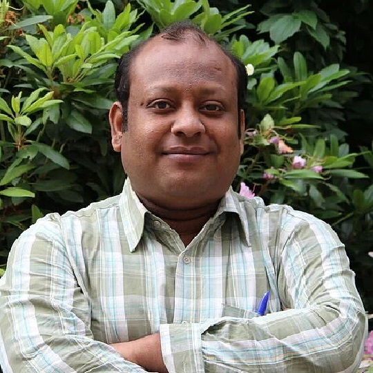
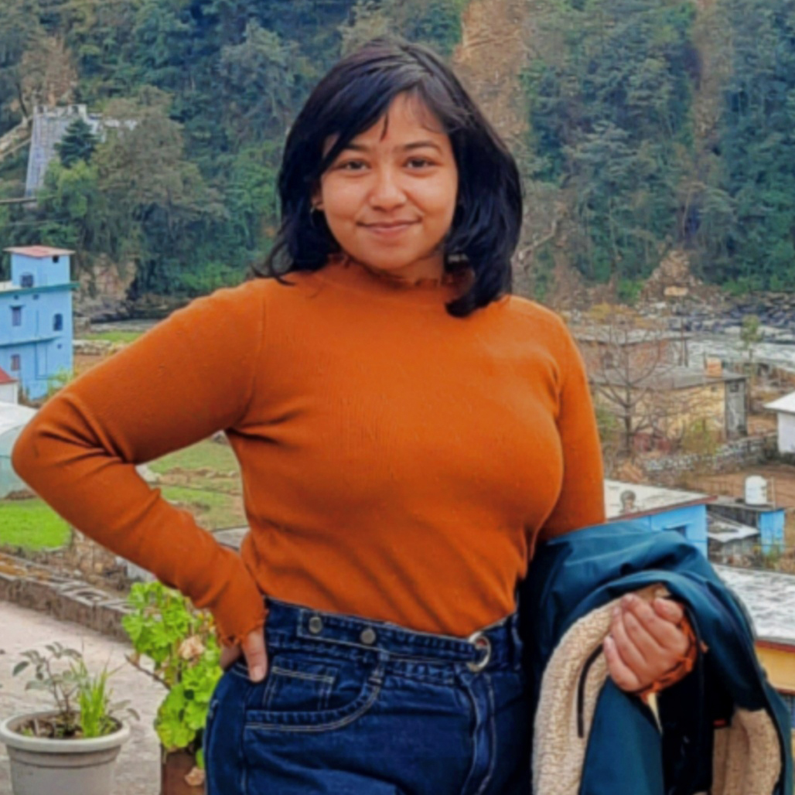
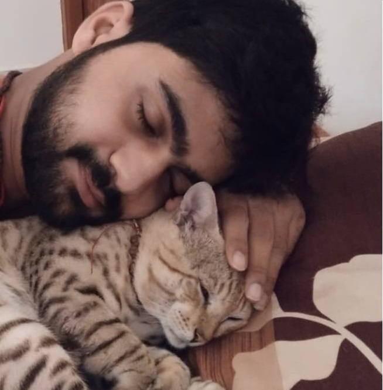
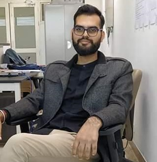

<div id="testimonials">
  <div
    class="container px-5 h-100 d-flex flex-column justify-content-center"
    data-aos="zoom-out"
    data-aos-delay="150"
    data-aos-duration="500"
  >
    <div id="testimonialsCarousel" class="carousel slide" data-bs-ride="true">
      <div class="carousel-indicators">
        <button
          type="button"
          data-bs-target="#testimonialsCarousel"
          data-bs-slide-to="0"
          class="active"
          aria-current="true"
          aria-label="Slide 1"
        ></button>
        <button
          type="button"
          data-bs-target="#testimonialsCarousel"
          data-bs-slide-to="1"
          aria-label="Slide 2"
        ></button>
        <button
          type="button"
          data-bs-target="#testimonialsCarousel"
          data-bs-slide-to="2"
          aria-label="Slide 3"
        ></button>
        <button
          type="button"
          data-bs-target="#testimonialsCarousel"
          data-bs-slide-to="3"
          aria-label="Slide 4"
        ></button>
      </div>
      <div class="carousel-inner">
        <div class="carousel-item active">
          <div class="d-flex flex-column justify-content-center py-5">
            
            <h3>Dr. Indranil Chatterjee</h3>
            <h4>Assistant Professor(Department of Chemistry), IIT Ropar</h4>
            <p class="py-3">
              <i class="bx bxs-quote-alt-left quote-icon-left"></i>
              I am working closely with the AWC members. Everyone here is kind
              hearted and works day in and day out with a positive goal and
              motto. The aim is to help the animal society working with these
              caring, dedicated, loving and reliable people. I feel proud to be
              a member of this society.
              <i class="bx bxs-quote-alt-right quote-icon-right"></i>
            </p>
          </div>
        </div>

        <div class="carousel-item">
          <div class="d-flex flex-column justify-content-center py-5">
            
            <h3>Sneha Shah</h3>
            <h4>Web Developer, B.Tech 21',IIT Ropar</h4>
            <p>
              <i class="bx bxs-quote-alt-left quote-icon-left"></i>
              Joining the Animal Welfare Committee (AWC) felt like finding a new
              family. We, a dedicated group of students and faculty at IIT
              Ropar, work towards peace between animals and humans. As a web
              developer and graphic designer, I support the cause through the
              creation of this website. I'm impressed by our members' passion
              and grateful to be part of a positive and meaningful organization.
              <i class="bx bxs-quote-alt-right quote-icon-right"></i>
            </p>
          </div>
        </div>
        <div class="carousel-item">
          <div class="d-flex flex-column justify-content-center py-5">
            
            <h3>Ullas Shrivastava</h3>
            <h4>M.Tech 22'</h4>
            <p>
              <i class="bx bxs-quote-alt-left quote-icon-left"></i>
              An eye-opening experience while serving AWC made me realize that
              we are sitting in the lap of nature together with all kinds of
              creatures. Instead of alienating them, a better way is to embrace
              them and nurture the beauty of creation. Like humans, they possess
              all emotions and reflexes except the voice that can seek help to
              ease their pain and suffering. AWC made me able to feel those
              unuttered voices to a great extent.
              <i class="bx bxs-quote-alt-right quote-icon-right"></i>
            </p>
          </div>
        </div>
        <div class="carousel-item">
          <div class="d-flex flex-column justify-content-center py-5">
            
            <h3>Rahul Nadda</h3>
            <h4>Research Scholar (Bio-Medical Engineering)</h4>
            <p>
              <i class="bx bxs-quote-alt-left quote-icon"></i>
              Nature is the best teacher, but have we paid the fees for future
              generations? I'm proud to be part of IIT Ropar's Animal Welfare
              Committee, where passionate students and faculty members work
              together to make the campus safe for all creatures. Their
              dedication towards animal welfare inspires me, and I commend their
              efforts to leave a positive impact in the institute's history.
              <i class="bx bxs-quote-alt-right quote-icon"></i>
            </p>
          </div>
        </div>
      </div>
      <!-- <button
        class="carousel-control-prev"
        type="button"
        data-bs-target="#testimonialsCarousel"
        data-bs-slide="prev"
      >
        <span class="carousel-control-prev-icon" aria-hidden="true"></span>
        <span class="visually-hidden">Previous</span>
      </button>
      <button
        class="carousel-control-next"
        type="button"
        data-bs-target="#testimonialsCarousel"
        data-bs-slide="next"
      >
        <span class="carousel-control-next-icon" aria-hidden="true"></span>
        <span class="visually-hidden">Next</span>
      </button> -->
    </div>
  </div>
</div>
